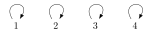
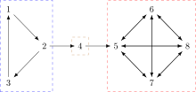

Consider for a moment the relation induced by the identity function \(\mathrm{id}\) with \(x \mapsto x\). It relates each element to itself, and nothing else. This relation is very disjointed, as you can see in the figure below for the set \(\left \{ 1,2,3,4 \right \}\).

Contrast this against all the hierarchies from the previous unit. Imagine you were to build those out of wires and styrofoam balls. Once you’re done, you can hang each one of them on the wall with a single nail. That’s because all the pieces of each hierarchy are hanging together. The identity relation, on the other hand, would need four nails to be hung on the wall. Its parts are disjoint. So now we have something we can work with to distinguish the linguistic hierarchies from arbitrary orders. In graph-theoretic terms, we are dealing with connectedness.
We can view each one of our linguistic hierarchies as a graph. A graph consists of a set \(V\) of vertices ordered by an edge relation \(E\), which must be binary. With graphs, we are still essentially dealing with a set that is ordered by a relation, but we now look at this structure through a slightly different lens.
The person hierarchy \(1 < 2 < 3\) corresponds to a graph with \(V \mathrel{\mathop:}=\left \{ 1, 2, 3 \right \}\). The choice of edges is less fixed.
Note that each one of the four choices for \(E\) results in a different graph, but they can be constructed automatically from the first one. The second graph uses the transitive closure of the original edge relation, the third one the reflexive closure, and the fourth one the reflexive transitive closure. Because of these principled connections between their edge relations, all four graphs can be regarded as distinct representations of the same person hierarchy.
We can regard the tense hierarchy from the previous unit as a graph with a transitive and reflexive edge relation. Compute \(V\) and \(E\) for this graph.
A graph is weakly connected if it does not consist of disjoint components that have no edges between them. If a graph looks like a collection of islands, it is not weakly connected. All the hierarchies we have seen so far are weakly connected graphs in this sense of forming a single piece, whereas the graph for the identity function is not weakly connected. So while the hierarchies might not all be lattices, semilattices, or even weak partial orders, they are all preorders (sets with a reflexive, transitive order) that are weakly connected graphs. Or, equivalently, they are weakly connected graphs whose edge relation is reflexive and transitive. That is a substantive restriction and rules out a lot of very unnatural hierarchies.
Using ideas from graph-theory, we can narrow down the class of possible hierarchies even more. Remember that we originally had the class of semilattices as a feasible candidate, until noun stem allomorphy ruled that out with its odd hierarchy:
Graph-theory provides a way around this by revealing hidden lattice structure in this figure. The strongly connected components of a graph are those parts where the vertices are so tightly connected by the edge relation that they are mutually reachable. Within a strongly connected component, one can move from any vertex to any other vertex in the same component.
For example, the graph below consists of three strongly connected components, which are indicated by dashed rectangles.

The stem allomorphy hierarchy consists of two strongly connected components. We can construct a new graph where each strongly connected component is replaced by a single node. This is called a condensation. In the case at hand, the condensation forms a smaller hierarchy that is, in fact, a lattice.

Draw the condensation of the example graph with three strongly connected components.
All the other linguistic hierarchies lack strongly connected components, so their condensation would look exactly the same. But if we look at condensations instead of the actual hierarchies, then perhaps we are dealing exclusively with semilattices.
So now we can formulate an even stronger restriction on linguistic hierarchies: every linguistic hierarchy must be a graph whose condensation is a semilattice. This sounds awfully abstract, but it just expresses some very simple ideas about how things in a hierarchy hang together.
Semilattices limit us to hierarchies where all elements \(a\) and \(b\) that are unordered with respect to each other must be ordered with respect to some shared element \(c\). In other words, elements of a hierarchy cannot be completely unrelated, at the very least there must be something else that ties them together. This is a very natural idea. A hierarchy that has absolutely nothing to say about the ranking of some elements would be rather odd.
By putting the semilattice requirement on condensations of hierarchies rather than the hierarchies themselves, we allow the hierarchies to contain cycles. A cycle describes cases where distinct elements all have the same status in the hierarchy. Again this is a fairly natural scenario.
Now we finally have some very natural restrictions on what a linguistic hierarchy may look like. The mathematical formalization of those ideas may seem abstract, but it is just a matter of interpretation. Once one understands what these technical concepts accomplish, it is a fairly pleasing state of affairs.
Does the condensation trick help us with the PCC? That is to say, is the hierarchy for the PCC such that its condensation is a semilattice? Justify your answer, and if your answer is No, suggest a way that the PCC hierarchy can be turned into a semilattice or perhaps even a lattice.